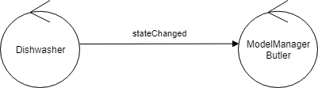
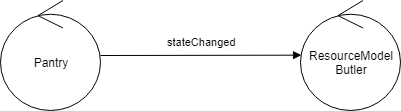
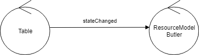
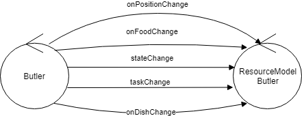

Introduzione
Una stanza per
Il frigo, la lavastoviglie e la dispensa sono incassati nei muri della stanza; sono, quindi, da escludere eventuali altre protuberanze dei muri.
Al centro è posto un tavolo, in modo che la configurazione della stanza sia simile a quella della seguente figura:

- Prepare the room: consiste nel porre sul tavolo i piatti presi dalla dispensa e il cibo contenuto nel frigo. In questa fase, l'insieme degli elementi da porre sul tavolo sono fissi e descritti in maniera appropriata.
- Clear the room: consiste nel riportare al frigo il cibo non consumato ed i piatti utilizzati alla lavastoviglie.
- Add food: consiste nel portare dal frigo al tavolo un determinato cibo (se presente).
Al momento, lavastoviglie e dispensa non sono da intedere come strumenti smart.
Requisiti
Progettare ed implementare un software da installare su frigo e RBR . In particolare,
l'RBR deve essere in grado di accettare i seguenti comandi inviatogli via smart-phone dal Maitre :
Maitre può, in ogni momento,
usare il suo smartphone per:
RBR eve essere in grado di
- prepare: l'
RBR de eseguire autonomamente il task Prepare the room. - add food: l'
RBR de eseguire autonomamente il task Add food. - clear: l'
RBR de eseguire autonomamente il task Clear the room.
- All'inizio, la stanza è vuota, la dispensa e il frigo sono pieni. L'
RBR è inRH e la lavastoviglie è vuota. - Il
Maitre invia alRBR il comando di prepare ed aspetta il completamento del relativo task. Alla fine l'RBR è di nuovo inRH . - Il
Maitre apre le porte alle persone. Durante il servizio ilMaitre può inviare all'RBR il comando add food, specificando un food-code. L'RBR esegue il task solo se il cibo con il codice specificato è disponibile nel frigo, altrimenti manda un warning alMaitre . Dopo il completamento del task l'RBR è inRH . - Alla fine del party, il
Maitre invia all'RBR il comando clear e aspetta il completamento del task. L'RBR torna di nuovo inRH .
- Consultare lo
stato della stanza , ad esempio per conoscere gli oggetti attualmente presenti sul tavolo, nella lavastoviglie,ecc...; - Fermare o riattivare un task attivo.
- Evitare l'impatto con ostacoli mobili (es. il
Maitre o altre persone/animali nella stanza).
- Esporre il suo contenuto corrente al
Maitre ; - Rispondere a domande relative al suo contenuto (es. se contiene il cibo con il foodcode specificato ).
Analisi dei requisiti
- Il software è un sistema distribuito composto principalmente da sei entità:
RBR ,Maitre ,Fridge ,Pantry ,Dishwasher ,Table . Pantry ,Dishwasher ,Table sono da intendersi come dispositivi non smart, ossia non capaci di accedere al proprio stato.- Il software del
Maitre deve poter essere acceduto da qualsiasi dispositivo mobile. - Per
RBR si intende quanto specificato dal documento UsingRobot2019.pdf. - Il
Maitre deve essere in grado di inviare i comandi di prepare, add food e clear all'RBR . - L
RBR deve essere in grado di eseguire in maniera autonoma i tre task. - Il flusso di esecuzione del sistema deve essere, in sequenza: prepare, add food, clear.
- L
RBR deve avere un punto di partenza e di arrivo di ogni task (RH). Pantry ,Dishwasher ,Table ,Fridge hanno, ognuno, un certo contenuto iniziale.- Il
Maitre deve essere in grado di aspettare il completamento del task richiesto. - Ogni cibo ha un food codeassociato, utile durante l'esecuzione del task add food.
- L
RBR deve essere in grado di chiedere al frigo la presenza o meno di un determinato cibo. - L
RBR deve essere in grado di notificare con un allarme l'assenza di un preciso cibo nel frigo. - Il
Maitre deve poter consultare in tempo reale lo stato della stanza in termini di contenuto del tavolo, della pantry, della dishwasher e del frigo. - Il
Maitre deve poter fermare e riattivare il task attualmente in esecuzione. - L
RBR deve essere in grado di evitare eventuali ostacoli mobili. - Il
Fridge deve esporre il suo contenuto. - Il
Fridge deve poter rispondere a domande riguardo al suo contenuto. Non è ben definito quali siano queste domande, ad esempio, potrebbero essere relative alla quantità di cibo presente. - Il
Fridge deve esporre un'interfaccia COAP
Test plan
- Se l
RBR riceve il comando prepare esso deve passare da uno stato di idle ad un stato preparing che ne indichi l'avvenuta ricezione. Analogamente per gli altri task. - Se l
RBR riceve il comando di stop deve trovarsi in uno stato di stopped. Se riattivato con il comando reactivate deve riportarsi nello stato precendente a quello di stop. - Se l
RBR è in uno stato di stop, l'arrivo del comando reactivate deve farlo tornare nello stesso stato in cui era prima dello stop - Se l
RBR ha terminato il task Prepare the room deve essere insensibile alla ricezione di altri comandi di prepare. Deve poter cambiare di stato esclusivamente alla ricezione di un add food o di un clear. - Al termine delle operazioni, l
RBR deve sempre trovarsi nella posizione RH. - Se viene modificato il contenuto di
Pantry ,Dishwasher ,Table oFridge è necessario controllare che essi siano stati effettivamente modificati - ...
Analisi del problema
- La natura distribuita del sistema porta a dover utilizzare l'infrastruttura QAK, presente nella software house di riferimento. Essa ci permette di astrarre dai dettagli comunicativi consentendo, quindi, di concentrarsi sulla business logic.
- La creazione di un frontend che giri su smart-phone potrebbe introdurre dei technology lock-in e portare all'introduzione di nuove tecnologie.
-
Il fatto che il robot debba poter operare su
Pantry ,Dishwasher ,Table oFridge porta a dire che si debba creare una rappresentazione della stanza in cui lavorare nota al robot. - La capacità del
RBR di poter evitare gli ostacoli implica che questo debba avere un comportamento proattivo nei confronti dei comandi maitre e reattivo verso eventuali ostacoli che possono presentarsi. - Il maitre deve essere reattivo a diverse informazioni contemporaneamente e nella gestione di queste rimanere vigile sulle altre.
-
I requisiti relativi al
Fridge suggeriscono un tipo di interazione request-response che l'infrastruttura attualmente non supporta -
L'esecuzione del task clear suggerisce che il
RBR debba sapere cosa si trova in un certo istante sul tavolo - L'utilizzo dell'infrastruttura QAK non permette di creare ASF in cui uno stato è sia reattivo ad un messaggio sia si porta in un nuovo stato tramite una transizione spontanea
Comportamento Butler
Comportamento Maitre

Comportamento Fridge
Comportamento Pantry

Comportamento Dishwasher
Comportamento Table
Review Test plan
Tutti i componenti sono modellati come automi a stati finiti, come tali i test dovrebbero essere in grado di stabili se effettivamente è avvenuta la transizione di stato desiderata.
Al fine di fare questo potrebbe essere una buona idea:
- Poter identificareunivocamente uno stato
- Poter accedere allo stato corrente di un componente
Questo è necessario per poter realizzare i test delineati precedentemente.
Quanto detto suggerisce l'idea che debba essere associato un modello ad ogni componente che tenga
traccia degli stati in cui si trova.
Un buon modo di modellare queste informazioni potrebbe essere quello di usare dei file Prolog che oltre alla
flessibilità e la potenza espressiva che si ha tramite l’unificazione permettono di modificare
facilmente le varie voci presenti all’interno.
Le informazioni di cui tenere traccia alla luce dei requisiti sono:
|
|
|
|
|
|
Project
Qui è stato principalmente strutturato il refactoring MVC. Ad ogni componente è stato associato un attore il cui compito
è quello di gestire il modello relativo, l'interazione pensata è:






In realtà per il RBR la cosa è più articolata perchè a causa della complessità del sistema risulta essere utile
adottare un procedimento model-driven e quindi subordinare i cambiamenti del robot a cambiamenti del modello
stesso. Ogni cambiamento produrrà un Event modelChange(NAME,ACTION) e solo chi sarà sensibile a questo tipo
di informazioni farà scattare la propria logica di business.
Test plans
I test sono stati sviluppati con JUnit
Di seguito alcuni dei test già citati precedentemente: